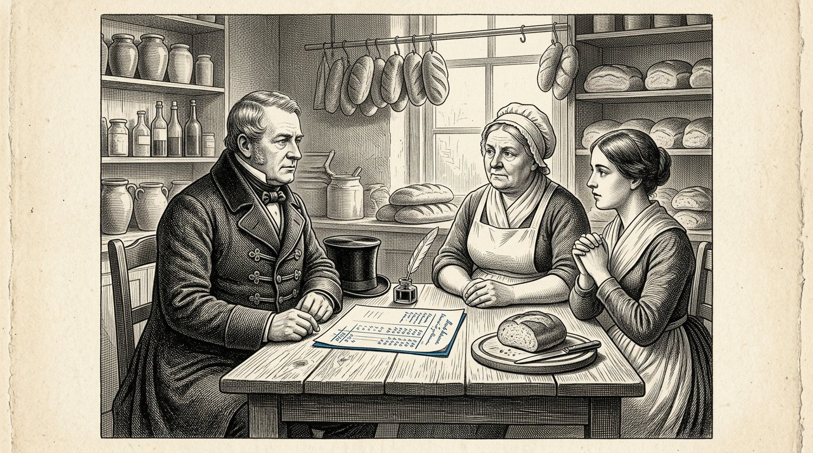
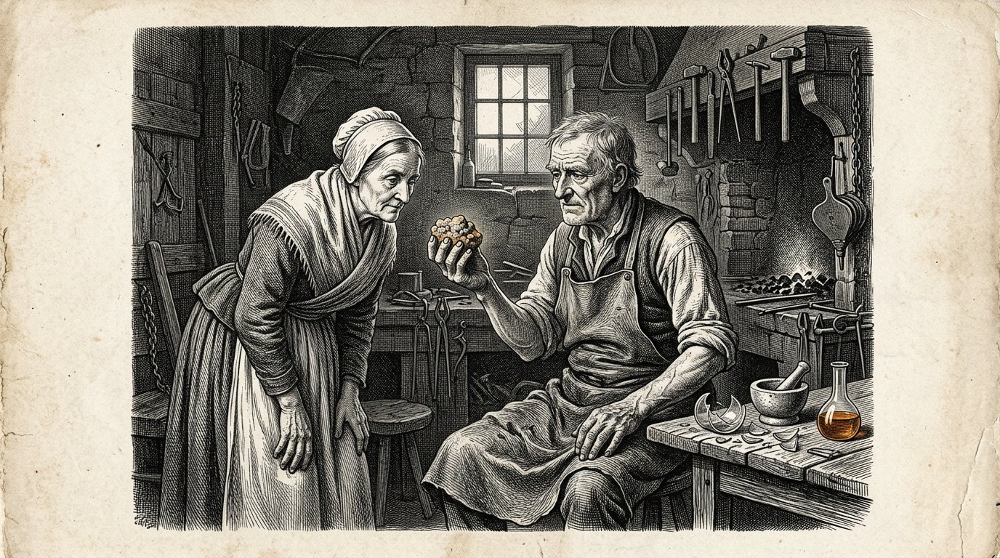

O Kosaris
LIVRO QUATRO
O livro do hidrolisado

O Kosaris
O livro do hidrolisado
O líquido que ninguém tinha visto
Prólogo — proferido por Kosus
Eu sou Kosus. Ao abrir este livro, já não estarei entre vós. Entreguei-o a Alkion, para que o guardasse até chegar o momento certo, e Anthea pô-lo por escrito juntamente com ela.
Em Livro Um, dei-lhe as quatro colunas e mostrei-lhe os cinco navios. Falei-lhe do sol no equador e da princesa que desperta. Neste quarto livro, trata-se de uma só coisa que, nos outros livros, se insinuava nas entrelinhas, mas nunca foi escrita: o líquido que sai da erva quando é prensada a frio.
Chamamos-lhe hidrolisado. Não é uma só coisa, mas muitas coisas ao mesmo tempo. É combustível para o seu fogão quando os rios de gás congelam. É aglutinante para as estradas que coloca sob os pés dos seus filhos. É matéria-prima para um plástico que dura cem anos, em vez de cinco.
Ela é uma única resposta a três perguntas a que, até agora, respondeu através de três vias de entrada diferentes. Quem responde a três perguntas com uma só resposta não fica mais pobre, mas menos dependente. Quem está dependente deixa que decidam por si. Quem está menos dependente decide por si próprio. Isso não é técnica. É soberania.
Fiz Alkion ouvir a tempestade no Livro Um. Fiz Petros chegar ao cais. Mostrei-lhe o sol no equador e o navio que navega com combustível próprio. Este quarto livro é o folheto informativo que acompanha essas histórias. Quem o lê sabe não só que o sol funciona. Sabe também como.
E sabe, mais importante ainda, por que razão não funciona sem reciprocidade. A balança de Timaris tem aqui um peso decisivo. Um líquido extraído da erva de outro país não é um óleo que se compra. É um aperto de mão dentro de um vidro.
O Kosus diz: aquilo que se compra três vezes a três senhores diferentes também se pode construir uma vez com um vizinho. A primeira maneira cria dependência. A segunda cria família.
Por Jacobus van Merksteijn
Este é o Livro Quatro de Kosaris. Dá seguimento ao Livro Um, no qual foram assentes as quatro colunas e as doze partes percorreram o mundo, desde o porto esquecido até à escolha do leitor. Encontra-se ao lado do Livro Dois, que tratava de Diakrisis — a distinção entre o que está estabelecido e o que foi assumido. E ao lado do Livro Três, no qual Anthea mostrou como se prepara uma criança para o juízo autónomo.
Este Livro Quatro é sobre o clima, mas não da forma como os jornais escrevem sobre ele. É sobre uma única substância, extraída de uma única erva, que resolve simultaneamente três problemas: a energia que mantém a casa aquecida, o caminho por onde as crianças vão para a escola e o plástico em que os seus livros são embalados. Quando uma única substância resolve três problemas ao mesmo tempo, muda mais do que a tecnologia. Muda quem decide.
As personagens não são novas. Alkion surge na Parte VI do Livro Um, onde ouviu a tempestade que ninguém mais ouviu. Petros surge na Parte VIII, onde chegou ao cais de Malta, junto do velho Cavaleiro. Demira encontra-se junto do seu forno, como sempre. Anthea é agora adulta e é ela quem passa este livro de mão em mão.
Nomeio uma coisa que os jornais preferem evitar. Chamamos hidrolisado ao líquido. Provém de uma erva gigante chamada Juncao e de uma árvore chamada Moringa. É produzido por prensagem a frio, sem aquecer nem fermentar. Vem da terra sem rasgar a terra. E vem do sol no equador, onde está e onde permanece.
Quem lê este livro a um ministro não muda o ministro. Quem o lê ao seu vizinho talvez mude a aldeia. Como sempre nestes livros: o poder está em passá-lo adiante, não em convencer quem quer permanecer surdo.
Malta, novembro de 2026.
Livro Um

Em que Alkion regressa ao porto, Demira lhe mostra o que se obtém da erva gigante, e é espremida a primeira garrafa de hidrolisado.

Alkion completara vinte e seis anos. Durante seis verões, trabalhara no Sul, nas plantações de Juncao, e regressara a casa no inverno, porque Kosus lhe escrevera dizendo que queria mostrar-lhe uma coisa. Quando chegou, já não o encontrou no cais. Morrera três semanas antes, e Demira não pudera dar-lhe a notícia, porque a carta partira demasiado tarde.
Na primeira manhã depois da sua chegada, estava sentada no banco ao lado da padaria, a olhar para o porto. Demira saiu com uma chávena de leite quente e disse: ele deixou-me uma coisa para ti. Está no fundo da padaria.
Alkion seguiu-a para dentro. Na divisão dos fundos havia uma arca de madeira e, sobre a arca, jazia uma carta. A carta estava escrita pela mão de Kosus. Dizia: Alkion, durante seis anos aprendeste no Sul aquilo que a erva pode fazer. Agora é tempo de aprender o que a erva é. Abre esta arca quando estiveres num estado de espírito tranquilo.
Alkion abriu a arca. Lá dentro encontrava-se uma prensa de parafuso de madeira, pequena mas pesada, do tamanho das que antigamente se usavam para espremer uvas. E uma garrafa de vidro, vazia. E um caderno encadernado em couro. Na primeira página, com a letra de Kosus, lia-se: o hidrolisado.
Alkion lia aquelas páginas. Lia devagar, porque Kosus escrevia como falava, e ela tornava a ouvir-lhe a voz. Tinha escrito como se prensa o capim a frio, sem o calor que quebra a doçura. Tinha escrito que plantas se intercalam, para que o capim se nutra a si próprio e o líquido se mantenha puro. Tinha escrito o que daí resulta: um líquido que arde sem fumo, que endurece sem cimento, que toma forma sem ser vertido.
Alkion fechou o caderno. Olhou para Demira. Disse: isto não é uma coisa. São três coisas ao mesmo tempo. Demira disse: foi precisamente isso que ele me disse quatro noites antes de morrer. Disse: se algo é uma coisa que faz três coisas ao mesmo tempo, não é técnica. É uma chave.
Alkion voltou a pousar a carta sobre a arca. Disse a Demira: então amanhã vou prensar.
O Kosus diz: quem herda uma chave não herda uma fechadura. Herda o dever de procurar quais portas se abriram no seu tempo e quais permaneceram fechadas.
E ninguém havia mentido.

Demira pensava que a prensagem se assemelharia à de uma prensa de uvas. Alkion explicou que era diferente. No caso das uvas, prensa-se para extrair o sumo. No caso de Juncao, prensa-se para separar a estrutura sem a quebrar. Se se prensar a uma temperatura demasiado elevada, o líquido oxida-se e perde-se metade. Se se prensar a uma temperatura demasiado baixa, nada sai. A temperatura deve ser a de uma manhã de verão amena.
Submeteram a erva à prensa, como dizia a escritura: primeiro, esmagada entre dois panos; depois, disposta em camadas, com um punhado de folhas de Moringa entre elas, retiradas de um feixe seco que Kosus deixara. A Moringa fazia algo que, sem ela, não se compreende: mantinha as partículas separadas. Sem Moringa, aglomeravam-se e o líquido tornava-se turvo. Com Moringa, permanecia límpido como o âmbar.
Apertaram o parafuso. Passou uma hora até cair a primeira gota. Decorreu ainda outra hora até um fio ténue escorrer para o copo. Ao fim do dia, tinham meia garrafa.
Demira disse: é tudo? Alkion disse: isto vem de um punhado. Se espremer um fardo, obtém meio litro. Se espremer um celeiro cheio, obtém cem litros. Se espremer um campo, obtém três mil.
Demira olhou para a garrafa. Disse: em que arde ela? Alkion respondeu: ainda não naquilo que temos. Tenho de construir um fogão que aceite este líquido. Durante quarenta anos, construímos fogões que funcionam a gás e a carvão. Este líquido precisa do seu próprio fogão. Será na próxima semana.
Demira disse: e o resto? Alkion disse: aqui está a primeira. Ergueu a garrafa contra a luz e viu como o líquido, no interior, apresentava cambiantes que iam do amarelo ao âmbar e deste a um azul quase intenso quando se inclinava a luz. Disse: Kosus afirmou que quem vê este líquido pela primeira vez deve permanecer em silêncio durante três respirações. Permaneceram em silêncio durante três respirações.
Então Demira disse: na minha vida, vi o pão nascer da massa e os filhos nascerem das mulheres. Esta é a terceira coisa que me causa admiração.
O Kosus diz: aquilo que é arrefecido a partir de algo que cresce conserva a força do que cresceu. O que é aquecido perde metade do que era. Quem o arrefece conserva o sol. Quem o aquece desperdiça-o.
E ninguém havia mentido.

No segundo dia, a vizinha de Demira veio espreitar. Chamava-se Marta e não cozinhava, mas vendia legumes no mercado. Tinha quatro filhos e estava habituada a ter uma opinião sobre tudo.
Marta viu a prensa e a garrafa e disse: que espécie de taberna estás a preparar? Demira disse: não é uma taberna. É um líquido que arde, que liga e que forma. Marta disse: se arde, liga e forma, não é um líquido; é uma mentira.
Alkion nada disse. Tirou uma colherada do líquido e verteu-a numa tigela. Pegou numa vela que estava sobre a mesa e aproximou a chama da tigela. O líquido incendiou-se. Ardeu com uma chama azul, uniforme e sem fumo, e irradiou um calor que se sentia no rosto quando se estava a um palmo de distância.
Marta disse: isso é genebra. Alkion disse: prove. Marta não se atreveu. Alkion mergulhou o dedo dela na tigelinha e lambeu-o. Ela disse: sabe a nada. A genebra sabe a genebra. Isto sabe como a água: a nada.
Marta disse: então é óleo. Alkion disse: o óleo cheira mal. Este não. Cheire. Marta cheirou. Disse: é verdade, não cheira.
Marta sentou-se no banco. Perguntou: então, o que é? Alkion respondeu: é aquilo que existe na erva e que a constitui. Agora extraímo-lo sem o aquecer. É antigo. Todas as plantas o têm. Nunca perguntámos se também queria sair sem que o cozinhássemos.
Marta refletiu. Disse: e o próprio capim? O que é feito dele? Alkion respondeu: depois de prensado, o capim transforma-se em alimento para as vacas. O que resta desse alimento é lavrado de novo no campo onde o capim cresceu. Nada se perde. A vaca come-o, e a terra recebe-o de volta. Nós retiramos apenas o líquido, e é dele que fazemos isto aqui.
Marta levantou-se. Disse: se aquilo que diz está certo, então não pensámos durante quarenta anos. Demira disse: é precisamente isso que Kosus diria. Marta disse: e onde está Kosus agora? Demira disse: morto. Marta disse: é uma pena. Teria querido perguntar-lhe por que razão não nos contou isto há trinta anos.
Alkion disse: ele contou-o. Nós não ouvimos. Isso é diferente.
Kosus diz: quem não acredita numa substância nova por nunca ter ouvido falar dela também não acredita no fogo, na cerveja ou nos ovos até os ver pela primeira vez. A diferença entre incredulidade e ignorância é uma demonstração no banco ao lado da padaria.
E ninguém havia mentido.

Nessa noite, Alkion prosseguiu a leitura do manuscrito de Kosus. Lia à luz de uma lâmpada alimentada pelo próprio líquido, que derramara numa velha lamparina de azeite. A lâmpada ardia com mais intensidade do que as lamparinas de azeite a que estava habituada, e sem o fumo adocicado.
Kosus escrevera seis páginas sobre aquilo a que chamava hidrolisado. A primeira página tratava de como era prensado. A segunda, do que dele se fazia. A terceira, do que não se devia fazer. A quarta, dos parceiros no equador. A quinta, da sebe de espinhos em torno dos governantes. A sexta era uma carta que começava assim: a quem, depois de mim, receber isto.
Na terceira página, sob o título do que não se deve fazer, lia-se isto: não aqueça o líquido até o transformar em etanol, a menos que se encontre numa situação de emergência. O etanol é uma etapa intermédia que reduz tudo a combustível. Ao produzir etanol, perde-se aquilo que torna o líquido singular: a sua versatilidade. Depois, só se pode queimá-lo. Já não se pode ligá-lo nem moldá-lo.
Alkion pousou o caderno. Ela compreendeu o que ele queria dizer. A via apressada para atravessar a crise consistia em produzir etanol e queimá-lo rapidamente em motores antigos. A via lenta consistia em aprender o que o próprio líquido é e construir com ele. A via apressada chegaria aos jornais. A via lenta atravessaria o século.
Prosseguiu com a quinta página, sobre a sebe de espinhos. Kosus escrevera: quem tentar fazer passar este líquido em Bruxelas como combustível será rejeitado, por não se enquadrar nas categorias existentes. Quem tentar fazê-lo passar como aglutinante será rejeitado, porque não existe qualquer processo de certificação para tal. Quem tentar fazê-lo passar como matéria-prima para plástico será ridicularizado, porque o plástico é mau. Quem tentar fazê-lo passar simultaneamente pelas três portas será mandado embora por três funcionários, cada qual com o seu próprio processo e sem que falem entre si.
Kosus escrevera por baixo: que fazer? Contorne a sebe. Construa primeiro numa aldeia. Deixe que funcione. Quando cem aldeias o fizerem, a sebe virá ter consigo. Não espere por ela. Ela não virá por si mesma.
Alkion fechou o caderno. Pensou: é isso que vou fazer. Aldeia após aldeia.
O Kosus diz: um texto que se herda de um mestre não é uma bíblia. É um guia de viagem. Quem lê o guia e não viaja, nada tem. Quem viaja sem guia, perde-se. Quem lê e viaja ao mesmo tempo, chega.
E ninguém havia mentido.
Parte II
Parte 2

Em que Alkion constrói um fogão que gosta de hidrolisado, a aldeia se mantém quente durante um inverno sem pedir nada aos rios de gás, e o presidente da câmara aprende a diferença entre mais barato e mais soberano.

Alkion encontrou um velho ferreiro do outro lado da aldeia. Chamava-se Wilm e estava reformado havia cinco anos. Tinha três fogões na sua oficina que nunca vendera, porque entretanto as pessoas tinham gás.
Ela disse-lhe: tenho um líquido que arde sem fumo. Wilm disse: então o seu líquido é melhor do que os meus fogões. Ela disse: os seus fogões foram construídos para o óleo. Quero adaptar um deles a este líquido. Wilm disse: mostre lá.
Ela trouxe-lhe uma garrafa. Verteu uma colher num pequeno recipiente e ateou-lhe fogo. Wilm olhou para a chama azul e permaneceu calado. Então disse: essa chama tem a temperatura de boas brasas. Mas não tende a permanecer em baixo, deixando frio o ar acima de si. Aquece por cima e por baixo por igual. Isso é diferente.
Alkion disse: o que significa isso para o seu fogão? Wilm disse: significa que a conduta de fumos pode ser mais estreita. Que a abertura do fogo pode ser maior. Que a câmara de aquecimento pode ser mais profunda, porque a chama não se sufoca a si própria. Posso fazer um em três semanas. Quer um?
Alkion disse: quero dez. Wilm disse: que quer fazer com dez? Alkion disse: nove vizinhos e Demira. Se funcionar com Demira e nove vizinhos virem que funciona, teremos cem encomendas antes do fim do inverno. E então teremos uma aldeia assente no líquido.
Wilm reflectiu. Disse: e o líquido em si? Quanto tem? Alkion respondeu: agora, uma garrafa. No próximo ano, um celeiro. Daqui a três anos, um campo. Wilm disse: então construir-lhe-ei três para este inverno e sete para o próximo. Aquilo que ainda não tem, o fogão não pode pedir.
Alkion anuiu. Ela disse: você é a primeira pessoa que encontro que não quer fabricar mais fogões do que há líquido. Wilm disse: sou velho. Já não me apetece fabricar algo que não possa ser alimentado pelo fogo. Fiz isso durante trinta anos com carvão. Agora só quero fazer aquilo que arde.
Kosus diz: um artesão que envelheceu e conservou a sua sabedoria sabe que é inútil fabricar mais do que aquilo que será usado. Um jovem artesão com a mesma sabedoria é uma raridade. Procure-o. Diga-lhe que o reconhece.
E ninguém havia mentido.

Foram instalados três fogões para o inverno. Um junto de Demira, outro junto de Marta e o terceiro junto do próprio Wilm, no seu barracão. Alkion forneceu aos três o líquido que, nesse verão, extraíra do campo atrás da aldeia onde plantara Juncao, com a autorização do presidente da câmara.
O inverno chegou cedo. Em novembro, caiu neve e o preço do gás subiu, como subia todos os anos quando acontecia alguma coisa a leste ou a sudeste, de que ninguém estava bem informado. Os vizinhos de Demira queixaram-se da conta. Demira disse: venham sentar-se comigo, ao calor.
Eles vieram. Sentaram-se na padaria que já não funcionava a gás. Olharam para o fogão, diferente do seu próprio fogão. Perguntaram: quanto lhe custa? Demira disse: custa-me a erva que deixamos crescer aqui diante da porta. Custa-me uma semana e meia de prensagem no fim do verão. Custa-me um fogão que se compra uma vez e dura vinte e cinco anos. De resto, não me custa nada.
Os vizinhos perguntaram: e a conta? Demira disse: não há conta. Não há nenhum fornecedor que me telefone. Não há nenhum preço que mude quando acontece alguma coisa no estrangeiro. Há uma garrafa que eu própria espremi. Quando a garrafa fica vazia, espremo outra.
Os vizinhos ficaram a pensar. Disseram: também podemos ter fogões destes? Demira respondeu: Wilm fará sete para o próximo ano. Se se inscreverem agora, ficam na lista. Inscreveram-se. Os sete fogões ficaram reservados em dois dias.
No dia de Natal, havia treze pessoas na padaria de Demira, porque em casa fazia demasiado frio e já não queriam pagar o que a conta do gás lhes exigia. Demira deu-lhes pão e disse: no próximo ano, estará em casa. Eles disseram: no próximo ano, estaremos em casa.
Alkion estava sentada no banco e observava. Pensou: treze pessoas. Isso é uma aldeia. Isso é um terço dos habitantes. É o suficiente para convencer o presidente da câmara de que algo tem de mudar.
O Kosus diz: o primeiro inverno em que uma aldeia se aquece sem os rios que não possui é o primeiro inverno em que os habitantes dessa aldeia decidem o que significa o Natal. Em todos os invernos anteriores, isso foi decidido por pessoas que não conheciam.
E ninguém havia mentido.

O presidente da câmara passou por casa de Demira em janeiro. Era o mesmo presidente da câmara que, no Livro Um, aprendera que uma conta que caísse sobre o padeiro era um caixão. Envelhecera e os seus ombros curvavam-se um pouco para a frente, mas os olhos continuavam tão perspicazes como antes.
Ele disse: Demira, soube que teve treze pessoas em sua casa pelo Natal. Demira disse: tive dezasseis, se contar as crianças. O presidente da câmara disse: porquê? Demira disse: porque o meu fogão estava quente e o delas não.
O presidente da câmara disse: isso é um acto louvável. Mas também é um problema para mim. Se vinte e três famílias deixarem esta aldeia porque já não conseguem pagar a conta do gás, perco receitas fiscais. Se vinte e duas famílias ficarem porque lhes dá de comer, também perco receitas fiscais, pois continuam sem pagar o gás.
Demira disse: então vem ter comigo à procura de uma solução, e não para apresentar uma queixa. O presidente da câmara disse: é precisamente por isso que aqui estou. Qual é a sua solução?
Demira chamou Alkion. Alkion explicou: se colocar cem famílias a trabalhar com o líquido, juntas terão uma conta de inverno nula. A erva cresce em terras que nos dá de arrendamento. A renda é a sua receita fiscal. A prensa encontra-se na casa comunitária, que lhe pertence. O aluguer da prensa é a sua receita fiscal. Os fogões são fabricados localmente por Wilm, e Wilm paga impostos sobre o seu volume de negócios.
O presidente da câmara disse: então, substituem a fatura do gás por arrendamentos, alugueres e receitas locais. Alkion disse: e por três coisas que a fatura do gás não tinha. Mantemos o dinheiro na aldeia. Desligamo-nos das flutuações dos preços. E temos trabalho para sete pessoas que, de outro modo, não teriam trabalho.
O presidente da câmara ponderou. Disse: quanto me custará pôr isso de pé? Alkion respondeu: uma temporada de terra que nos cede em usufruto e uma sala na casa comunal. Nada mais.
O presidente da câmara perguntou: e quanto é que isso me vai render? Alkion respondeu: não lhe posso dizer isso em números. Mas posso pesá-lo noutra balança. A sua aldeia já não encolhe. Os seus jovens ficam. Os seus velhos não morrem de frio. E a fábrica mais adiante, que lhe fornece eletricidade, pode cobrar-lhe o que quiser sem que fique dependente dela.
O presidente da câmara olhou para Alkion e disse: aprendi isto com Demira, há vinte anos. A balança que, quantitativamente, parece ser a melhor nem sempre é a balança que sustenta a aldeia. Opto pela proposta.
Kosus diz: um presidente de câmara que avalia a aldeia pelo dinheiro que ela rende não compreende o que a aldeia é. Um presidente de câmara que avalia a aldeia pelo que ela suporta pesa com a balança de Timaris. Essa balança não se quebra com o mau tempo.
E ninguém havia mentido.
Parte III
Parte 3

Em que o líquido já não se limita a arder, mas também liga, e em que um funcionário provincial aprende que uma estrada é mais do que o fornecedor do seu asfalto.

Wilm foi certa tarde à padaria, trazendo na mão um torrão que pousou sobre o balcão. Disse a Alkion: essa é a tua substância líquida, misturada com pó de pedra e deixada a repousar durante três dias. Pensei: se ela arde, que faz quando não arde?
Alkion pegou no torrão. Era duro como pedra. Deixou-o cair no chão. Não se partiu. Perguntou: como fez isto? Wilm respondeu: misturei o líquido com um pouco de granito partido do meu jardim e com uma gota de ácido da minha bateria. Coloquei tudo numa lata e deixei-a três dias ao ar livre. Foi isto que saiu.
Alkion revirava o pequeno bloco entre as mãos. Disse: isto é betão polimérico sem cimento. Wilm disse: não sei o que é. Sei que é duro e que não se parte.
Alkion voltou ao texto de Kosus. Na segunda página, escrevera aquilo que dele se obtém: o hidrolisado não é uma coisa só. É uma família. Quando o acidificam e ele encontra minerais, torna-se um aglutinante. Quando o acidificam a quente, torna-se uma resina. Quando o misturam com fibra vegetal e o secam, torna-se um material mais leve do que a madeira e mais resistente.
Alkion voltou a lê-lo para Wilm. Wilm disse: o seu mestre era mais astuto do que eu pensava. Fiz por acidente aquilo que ele escrevera deliberadamente.
Alkion disse: isso não é um acidente. É o que faz um velho artesão quando entra em contacto com uma nova substância. Não lhe pergunta o que é. Mistura-a com aquilo que conhece e observa o que acontece. É o caminho mais curto.
Wilm disse: e agora? Alkion disse: agora construímos um caminho.
Kosus diz: um artífice que mistura os seus materiais com aquilo que recebe, sem primeiro perguntar o que é, descobre mais depressa o que resulta do que um erudito que começa por ler o manual. Ambos são necessários. Quem concilia os dois, constrói.
E ninguém havia mentido.

O presidente da câmara estava disposto a substituir um troço da estrada da aldeia. Tratava-se de uma faixa de trezentos metros entre a casa comunitária e a igreja. Essa faixa fora asfaltada onze anos antes, e o asfalto começava a abrir fendas.
Alkion e Wilm fizeram eles próprios a nova camada de revestimento. Usaram seis barris de hidrolisado, três toneladas de basalto finamente triturado, proveniente de uma pedreira esgotada, e um balde de ácido cítrico comprado na mercearia. Misturaram tudo numa velha betoneira e despejaram-no sobre a base preparada.
A mistura endureceu em três dias. Quando ficou pronta, a estrada era amarelo-ocre, com um brilho azulado quando a luz vinha de cima. Era mais lisa do que o asfalto e sentia-se ligeiramente mais fria sob os pés.
As pessoas da aldeia vieram ver. Caminharam sobre ele. Disseram: é uma cor bonita. Disseram: é liso. Disseram: quanto tempo durará?
Alkion disse: não sabemos. Pensamos em trinta anos. Talvez cinquenta. O asfalto ao lado durou onze anos. Se este durar vinte anos, será mais barato do que o asfalto. Se durar trinta anos, custará metade. Se durar cinquenta anos, teremos construído um troço de estrada que os nossos netos ainda usarão.
O presidente da câmara percorreu a estrada. Disse: e a reparação? Alkion respondeu: o mesmo líquido e o mesmo cascalho. Misturamo-los e vertemo-los na fenda. A mistura liga-se à estrada existente, porque é feita da mesma substância. No caso do asfalto, é preciso refazer toda a área.
O burgomestre disse: e a cor? Alkion disse: a cor provém da Moringa. Podemos alterá-la acrescentando outros pigmentos. A cor que se vê é a natural. Dentro de dez anos, oxidará um pouco e tornar-se-á mais castanha. Algumas pessoas acham isso bonito. Outras, não.
O presidente da câmara perguntou: e a conta? Quanto custa um metro? Alkion respondeu: menos do que um metro de asfalto, desde que façamos nós próprios o líquido e o cascalho seja de origem local. Se o adjudicarem a um empreiteiro que tenha de o obter numa fábrica, fica duas vezes mais caro. Se o fizerem vocês mesmos, com as pessoas que já prensam o líquido, sai barato.
O presidente da câmara escreveu-o. Disse: vou para a província.
Kosus diz: uma estrada construída pelo próprio povoado não é apenas uma estrada. É uma lista de pessoas que sabem como foi construída. Quando racha, o povoado sabe repará-la. Quem entrega a estrada a terceiros perde, juntamente com ela, o conhecimento.
E ninguém havia mentido.

O burgomestre levou Alkion à província. Falaram com um funcionário responsável pelas infraestruturas. Chamava-se Van Dael. Era severo e meticuloso, e não era mau.
Van Dael disse: deixe-me ver o que tem. Alkion pousou sobre a secretária dele amostras da estrada. Mostrou-lhe quão duro era o aglutinante. Mostrou-lhe os desenhos que fizera da escrita. Explicou que erva ali crescia e como era prensada.
Van Dael disse: é interessante. Mas não posso aprovar uma estrada que não se enquadre nas categorias existentes. Temos normas para o asfalto e normas para o betão. A sua estrada não é nem uma coisa nem outra.
Alkion disse: quais dos seus critérios posso tentar cumprir? Van Dael disse: nenhum. O seu material não se enquadra em nenhuma das duas categorias, porque os testes funcionam de maneira diferente. Não posso avaliá-lo.
Alkion disse: portanto, pode proibir-me. Van Dael disse: não se trata de proibir. Não posso aprová-lo. É diferente. Pode fazer experiências nas terras da sua própria aldeia. O que não pode fazer é registar essa estrada como estrada provincial.
Alkion reflectiu. Disse: é precisamente disso que precisamos. Não queremos ser uma estrada provincial. Queremos ser cem estradas de aldeia que funcionem. Quando cem estradas de aldeia funcionarem, talvez apareça alguém que crie uma nova categoria. Até lá, faremo isso à margem do seu processo.
Van Dael olhou para ela. Disse: é inteligente. Alkion disse: tive um mestre que me explicou isto. Ele disse: os governantes chegam sempre atrás. Não os espere. Construa primeiro.
Van Dael disse: não conheço esse mestre, mas ele tinha razão. E, por ele ter razão, farei o seguinte. Não incomodarei a sua aldeia. Também me calarei perante os outros funcionários que talvez quisessem incomodá-la. Quando tiver dez aldeias, volte. Talvez então tenhamos algo de que falar.
Alkion assentiu. Disse: voltarei quando tivermos dez aldeias. Van Dael disse: e, até lá, mantenha a cabeça baixa. Há funcionários em Bruxelas que só atacam à sua volta porque o silêncio se prolongou demasiado. Não seja um alvo.
Ela saiu da sala. No corredor, o presidente da câmara disse: ele foi mais fácil do que eu pensava. Alkion disse: ele foi mais fácil porque sabe que está errado. Os funcionários que sabem que estão errados podem ser ajudados. Os funcionários que julgam ter razão não podem ser ajudados. Tivemos sorte.
Diz o Kosus: um funcionário que não o pode avaliar, mas também não o incomoda, é um aliado a quem não pode chamar aliado. Proteja-o, não o pondo em apuros. Quando mais tarde precisar dele, ele estará presente.
Livro Quatro
E ninguém havia mentido.
Livro Quatro

Em que Alkion é chamado a Bruxelas, descobre que a sebe de espinhos existe realmente e aprende que quem não consegue atravessá-la pode contorná-la.

Ao fim de três anos, a aldeia tinha sete fogões, a trezentos metros de distância, e catorze aldeias vizinhas que começavam a fazer o mesmo. Entretanto, Alkion copiara seis vezes o escrito de Kosus e entregara-o a seis outros líderes de aldeia.
Na terceira primavera, chegou uma carta de Bruxelas. A carta fora escrita por um assessor de um comissário. Dizia: Exma. Senhora, chegou ao nosso conhecimento que utiliza um material não classificado na infraestrutura, em violação das diretrizes relativas a materiais de construção patenteados. Queira comparecer no nosso gabinete no prazo de trinta dias, a fim de prestar esclarecimentos.
Alkion leu a carta. Tornou a lê-la. Perguntou-se o que eram materiais de construção patenteados, qual era a diretriz e se estava vinculada a ela.
Ela foi ter com Demira. Demira disse: não vás. Alkion disse: se eu não for, vem o oficial de justiça. Demira disse: então que venha. Alkion disse: então tenho mesmo de ir. Demira disse: vai, mas não vás sozinho. Eu vou contigo.
Foram juntos para Bruxelas. No comboio, Alkion perguntou: o que espera que aconteça? Demira respondeu: tentarão assustar-nos. Dir-nos-ão que seremos multados se não pararmos. Não dirão o que fazemos de errado, porque não fazemos nada de errado. Dirão que não nos enquadramos nas categorias. Depois pedir-nos-ão que paremos.
Alkion disse: e que devo eu dizer? Demira disse: que você não se enquadra nas categorias deles. E que não vai parar, porque não se deixa de fazer algo que funciona só porque não cabe num processo. E que vai para casa. É quanto basta.
Alkion disse: e se me processarem? Demira disse: então terão o seu primeiro processo judicial sobre um material que eles próprios não compreendem. Esse será o problema deles, não o nosso. E será a nossa primeira publicidade que não parte de nós mesmos. Isso é útil.
Kosus diz: uma carta de Bruxelas geralmente não é uma ordem. É um teste. Quem responde como se espera confirma a sebe. Quem responde de modo inesperado contorna-a. Ambas são válidas. Só a segunda conduz a algum lugar.
E ninguém havia mentido.

Chegaram a um edifício imponente. Alkion esperava que houvesse espinhos visíveis, tal como Kosus escrevera. Surpreendeu-se ao ver que o edifício se assemelhava a qualquer outro palácio burocrático: janelas altas, corredores austeros, retratos nas paredes de pessoas que ninguém conhecia.
Foram recebidos pelo conselheiro que escrevera a carta. Era jovem e cortês, e vestia um fato que lhe assentava bem demais. Conduziu-os a uma sala de reuniões onde aguardavam outras três pessoas.
Apresentaram-se. A primeira era responsável pelas infraestruturas. A segunda, pelos materiais. A terceira, pelo clima. A quarta, que conduzia a conversa, pela conformidade.
Conformidade disse: Senhora Alkion, está a utilizar nas suas estradas um material que não foi aprovado. Alkion disse: não pedimos aprovação. Conformidade disse: esse é o problema. Alkion disse: esse não é o meu problema. Construímos em terras da aldeia, com recursos da aldeia. Não há nenhuma lei que diga que temos de pedir aprovação para aquilo que construímos nas nossas próprias terras.
Infraestrutura disse: existe, de facto, uma diretiva. Alkion disse: qual diretiva? Infraestrutura disse: a Diretiva 2019/384, relativa a materiais uniformes para a construção de estradas. Alkion disse: leia essa diretiva na parte que se aplica a nós. Infraestrutura folheou os seus papéis. Disse: é uma diretiva extensa. Alkion disse: leia a parte que se aplica a nós.
A Infraestrutura disse: a esta escala, a diretiva não é vinculativa. Alkion disse: obrigado. Estamos, portanto, dentro da lei.
Materiais disse: mas o seu material não consta do nosso registo. Alkion disse: é um material de aldeia. Não tem de constar do seu registo. Materiais disse: se for aumentar a escala, terá de constar. Alkion disse: é verdade. Então, combinamos que, quando aumentarmos a escala, o registaremos? Materiais disse: parece-me razoável. Alkion disse: então estamos de acordo.
Clima disse: e a alegação climática? Alkion disse: qual alegação? Clima disse: vocês afirmam que o vosso material é melhor para o clima. Alkion disse: não afirmamos isso. Afirmamos que funciona, que é local e que não requer gás. Se alguém daí extrai uma alegação climática, são palavras dessa pessoa, não nossas.
O Clima perguntou: mas recebe subsídios climáticos? Alkion respondeu: não. Não pedimos subsídios. Somos uma aldeia que se aquece a si própria. Sem subsídios.
Seguiu-se um silêncio. Naleving olhou para os outros três. Naleving disse: não tenho causa. Os outros três assentiram.
Alkion disse: agradeço-lhe o seu tempo. Vou para casa. Levantou-se. Demira levantou-se. Saíram. Na rua, Demira disse: foi mais fácil do que eu pensava. Alkion disse: é porque só têm poder sobre quem quer alguma coisa delas. Quem nada quer delas, não conseguem prender. É assim que se contorna a sebe de espinhos sem lhe tocar.
Kosus diz: quem quer alguma coisa dos governantes é governado por eles. Quem nada quer deles é ignorado ou respeitado. Ambas as coisas são preferíveis a ser governado. Escolha, pois, aquilo que não quer deles. Essa é a primeira metade da sua liberdade.
E ninguém havia mentido.

Atravessaram o corredor em direção à saída. O jovem assessor que os recebera veio atrás deles. Disse: minha senhora, posso fazer-lhe uma pergunta à margem da reunião?
Alkion ficou de pé. O conselheiro disse: li a sua carta, vinda da sua aldeia, antes de o convidar. Também pesquisei o seu nome no Google. Li o que faz. Não queria convidá-lo. O meu superior obrigou-me.
Alkion disse: e agora? O conselheiro disse: e agora quero dizer-lhe uma coisa. Há três espécies de pessoas neste edifício. A primeira espécie ama a sebe de espinhos, porque ela protege a sua existência. A segunda espécie odeia a sebe, mas não se atreve a abrir caminho através dela a dentadas. A terceira espécie dá-lhe a volta, como você faz. Pertenço à segunda espécie e gostaria de pertencer à terceira.
Alkion disse: por que me conta isso? O conselheiro disse: porque quero perguntar-lhe se posso ajudá-lo sem que o meu chefe dê por isso.
Alkion reflectiu. Disse: como nos pode ajudar? O conselheiro respondeu: informando-a quando surgirem novas orientações que a possam afectar. Ajudando-a a ler essas orientações de modo a compreender como não cair nelas. Apresentando-lhe colegas de outras direcções que se mostram bem-dispostos.
Alkion disse: e o que quer em troca? O conselheiro disse: que o meu nome não apareça em parte alguma. Que me registe sob um nome que não seja o meu. E que, quando daqui a quinze anos a sebe cair, dê a alguém da minha geração algo digno para fazer. Nessa altura estaremos desempregados e não saberemos ainda quanto valemos.
Alkion disse: o seu nome figurará no meu livro sem que o seu nome seja mencionado. E, dentro de quinze anos, estará na lista das pessoas a quem será confiada uma tarefa. Prometo-lho.
O conselheiro disse: obrigado. Deu-lhe um pequeno papel com um endereço de e-mail e um nome que não era o seu. Disse: use isto apenas quando tiver um problema concreto. Não para acompanhar. Eu próprio mantê-lo-ei informado.
Continuaram a caminhar. Na rua, Demira disse: ele era amável. Alkion respondeu: era mais do que amável. Era um traidor pela metade dentro da sua própria casa, a nosso favor. É o aliado mais raro que se pode ter. Protejam-no melhor do que protegem os vossos.
Kosus diz: em cada casa da sebe há alguém que odeia a sebe. Não é aquele que se manifesta. É aquele que lhe dirige a palavra no corredor, quando ninguém está a olhar. Quem aprende a reconhecer pessoas assim tem sempre uma porta aberta dentro da sebe.
E ninguém havia mentido.
Parte V
Parte 5

Em que Petros regressa ao cais ao fim de vinte anos, Alkion lhe entrega o manuscrito de Kosus, e Anthea encerra o livro com um convite.

Entretanto, Petros fizera trinta e seis anos. Vivera vinte anos em Malta, junto do velho Ridder, e, quando o Cavaleiro morreu, viajara durante quatro anos pelas terras do equador. Numa terça-feira à tarde, em setembro, regressara ao cais onde chegara em rapaz.
Alkion não o reconheceu de imediato. Viu um homem alto e magro, de rosto curtido pelo tempo, que se sentara no banco junto à padaria e olhava para o porto como quem não o via havia dezasseis anos e se demorava a inventariar as mudanças.
Ela sentou-se junto dele. Disse: você olha como eu olhava quando regressei do sul pela primeira vez. Ele olhou para ela. Disse: Alkion. Ela disse: Petros. Ficaram sentados, em silêncio, lado a lado. Então ele disse: a aldeia já não é o que era.
Alkion disse: é verdade. Está mais quente. Há uma oficina ao lado da casa comunitária, onde trabalham seis pessoas que antes não tinham emprego. A estrada é diferente. Os sete fogões passaram a ser sessenta e dois, e as catorze aldeias vizinhas, cento e quarenta.
Petros disse: de onde tirou tudo isso? Alkion disse: de um baú que Kosus me deixou. E da relva. E de uma só substância que faz três coisas ao mesmo tempo.
Petros disse: e o Cavaleiro? Alkion disse: está morto, eu sei. E Malta? Petros disse: Malta fez o exit. A princesa despertou. Temos agora algo que construímos. Voltei porque tenho de terminar aqui algo que comecei quando era rapaz.
Alkion perguntou: o que quer acabar? Petros respondeu: quero dar continuidade ao escrito de Kosus. Alkion perguntou: como soube que havia um escrito? Petros respondeu: ele mo tinha mostrado quando eu era rapaz. Disse então: quando tiveres idade suficiente, recebê-lo-ás de quem o tiver recebido depois de mim.
Alkion disse: então chega a tempo. Tenho quarenta e dois anos e copiei o manuscrito seis vezes. Se tomar a sétima cópia, poderá começar noutro lugar aquilo que comecei aqui.
Petros disse: onde quer que eu comece? Alkion disse: isso não me cabe. Cabe a você. Entrego-lhe a escritura. Você escolhe o lugar.
Kosus diz: um escrito que passa de discípulo em discípulo é mais do que um escrito. É uma cadeia. Cada elo é uma vida. Quem quebra a cadeia quebra as gerações. Quem a transmite prolonga-as.
E ninguém havia mentido.

Entretanto, Anthea tinha trinta e cinco anos. Três anos antes, fora visitar a avó, Demira, e ficara. Ajudava Alkion a registar o que acontecia na aldeia e fora ela quem fizera a sexta cópia do manuscrito.
Na noite em que Petros regressou, Alkion, Demira, Anthea e Petros estavam sentados à mesa na padaria. Comiam pão e bebiam vinho quente. Anthea trazia consigo um caderno no qual escrevia.
Demira disse: o que escreve, Anthea? Anthea disse: escrevo o que aqui acontece desde que Alkion regressou. Escrevo-o como continuação dos livros que o avô Kosus deixou. Penso que deverá ser o Livro Quatro.
Alkion disse: porquê? Anthea disse: porque o Livro Um deu as quatro colunas. O Livro Dois deu Diakrisis. O Livro Três foi o meu próprio livro sobre educação. O Livro Quatro tem de ser sobre aquilo que estamos a construir com a erva e o líquido. Caso contrário, não será compreendido.
Petros disse: quem o publicará? Anthea disse: openvizier.org, tal como os três anteriores. Petros disse: e quem o lerá? Anthea disse: os mesmos leitores dos três anteriores. Alguns compreenderão e alguns fingirão compreender. O leitor mais importante é o quarto tipo: aquele que o lê, faz alguma coisa e o transmite ao seu vizinho. É para esse leitor que escrevemos.
Alkion disse: e o desfecho? Anthea disse: o desfecho é você entregar o manuscrito a Petros e Petros começar noutro lugar. Esse é o fim deste livro e o princípio do seguinte. O Livro Cinco cabe a Petros escrever, quando estiver preparado para isso.
Petros disse: então quero fazer uma pergunta. Quero que, quando abrir o escrito noutro lugar, ele não se pareça com o que aqui foi feito. Quero começar num lugar onde não se saiba o que é hidrolisado nem o que é Juncao. Quero chegar lá com uma arca, uma garrafa e um escrito, tal como Alkion chegou aqui. Quero ver se volta a resultar.
Alkion disse: voltará a funcionar. Não porque a erva seja mágica, nem porque o líquido seja encantado. Funciona porque está certo. Aquilo que está certo funciona onde quer que alguém queira escutar.
Demira levantou-se. Pegou na arca que se encontrava ao fundo da padaria e colocou-a sobre a mesa. Disse: leve-a consigo, Petros. Alkion tirou o manuscrito da arca e entregou-o a Petros. Disse: esta é a sua cópia. Tenho seis. Posso dar-me a esse luxo.
Petros pegou no caderno. Disse: por onde hei de começar? Alkion disse: por algum lugar onde se possa pousar uma garrafa sobre um balcão e fazer três pessoas olharem para a chama. Não é preciso mais nada para começar.
Anthea fechou o seu caderno. Disse: este é o Livro Quatro. Disse a Petros: guarde-o bem. Quando começar, peça a um dos seus primeiros discípulos que escreva o Livro Cinco.
O Kosus diz: um livro que se fecha com uma chave na mão de outrem não é um livro que chegou ao fim. É um livro que começa. O verdadeiro leitor é aquele que o abre num lugar onde ainda não esteve e nele escreve algo de novo. Esperamos que seja esse leitor.
E ninguém havia mentido.
O Kosaris — Livro Quatro — O livro do hidrolisado.
Registado por Anthea van Merksteijn e Jacobus van Merksteijn, engenheiro e editor, residentes em Malta e em Palma. Publicado sob a égide de openvizier.org. Ilustrações em litografia a preto e branco, com apontamentos azuis, segundo a identidade gráfica de Het Open Vizier.
"Quem tem nas mãos um líquido que faz três coisas ao mesmo tempo não tem uma técnica. Tem uma chave."